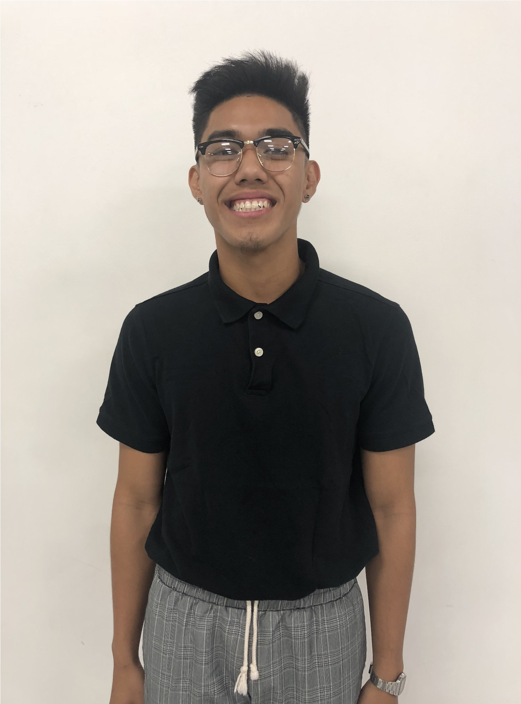

tullen.mark@gmail.com
(714) 342 - 0373
 Hello! My name is Mark Anthony Tullen and I am currently a third year at the University of California, Irvine. I am pursuing a bachelor of science degree in computer engineering while also completing a minor in philosophy. I enjoy most of my time learning new things about the world, questioning what can be done to improve on it and finding ways to possibly implement solutions. On my free time, I dance and am currently volunteering as the administrative director for The G.O.O.D. Project, an Irvine-based dance team that competes in the high-level spectrum.
I became very active once I entered high school. I attended Western High School in Anaheim, California and graduated as the valedictorian with an unweighted grade point average of 3.98. I was in my high school’s varsity wrestling team during my sophomore year where I became the varsity scholar wrestler of the year due to my performance inside and outside of the sport. I left to pursue my passion for dance by joining my high school’s dance team as well as another one located in Garden Grove. I was able to balance all of this while joining various clubs on campus. I sought to contribute more to the school that was giving me the opportunity to learn and grow so I became the junior class president, helping raise my class out of debt. My vice president and I accumulated a high advance for next year’s class council to use by planning a successful senior prom that amounted to many ticket sales. I finished off my high school club career by becoming the president for Western’s chapters of the California Scholarship Federation and the National Honors Society, granting 100 students the opportunity to graduate with outstanding academic merit. As senior awards night came, I was awarded for being the most extraordinary student of the year for my extracurricular activities and my academic studies and was given the Western Pioneers Forever Scholarship to help me with college.
Before beginning my studies at the University of California, Irvine, I became the recruitment and retention intern for the local student government organization known as the Associated Students of the University of California, Irvine. I helped increase recruitment rates by 10% and soon became the transportation commissioner during my sophomore year. As the transportation commissioner, I was able to plan out many proposals for possible solutions to on-campus transit issues and I finished by successfully negotiating for a $1,000,000,000 environmental-friendly electric bus to help provide transit routes for off-campus students. Now, I am currently seeking an internship to help sharpen and increase my engineering skillset and contribute to those around me.
I have been dancing ever since 2014. When I became a junior in high school, I decided to join my high school dance team known as West Creation at the time. I competed with them for one year in local dance competitions but once it was the summer after my junior year, I performed with another team called 1080P. With them, I performed in one local exhibtion showcase in Redondo Beach. As I approached my senior year of high school, I wanted to take my dance career more seriously and left my two teams to join Underground, a high-level junior dance team. I competed in two annual Vibe Juniors dance competitions, two Bridge Juniors dance competitions, two Southern California Collaboration dance competitions, and two Body Rock Juniors dance competitions. The team has taught me many lessons and has helped improve my quality of life while also granting me friendships that would last a lifetime.
As soon as I became 18, I left the junior dance spectrum to compete in the high-level adult competition scene. I auditioned and made it into a competitive team known as The G.O.O.D. Project where I became the administrative director right after my first year. I have been able to network with many of the teams members as it is a team with a diverse array of people ranging from students to full-time workers. It has taught me to become more mature of a person while also becoming friends with people that I am very comfortable with. I have done much adminsitrative work for the team, applying for competitions, handling fees, and answering e-mails. As of now, I have competed in two Bridge dance competitions, one Vibe dance competition, one Fusion dance competition, and one Ultimate Brawl dance competition with the team.
Here is a playlist of all the performances I have done that are currently on YouTube: click here.